Práctica 6.1.- Dockerización del despliegue de una aplicación Node.js
1.- ¿Por qué dockerizar?
-
Permite una configuración rápida del entorno de forma local, ya que si todos los servicios están implementados en contenedores, es muy rápida la configuración del entorno.
-
Evitas gran parte de los problemas de desarrollo que provienen de la configuración de cada integrante del equipo de desarrollo tienen de su entorno.
-
Despliegues más rápidos.
-
Mejor control de versiones ya que se puede etiquetar con tags
-
Rollbacks más fáciles ya que tienen las cosas muy controladas debido a la versión y así es más fácil revertir el código.
-
Fácil configuración de múltiples entornos permitiendo establecer un entorno local, de integración, de puesta en escena y de producción. Esto se hace más fácil ya que la mayoría de veces simplemente con un cambio de VARIABLES DE ENTORNO lo tendremos desplegado.
-
Apoyo de la comunidad existe una fuerte comunidad que contribuyen con grandes imágenes que pueden ser utilizadas para el desarrollo.
2.- Despliegue con Docker
Primero nos conectamos desde nuestra máquina local a la virtual mediante ssh usuario@direccionIp.
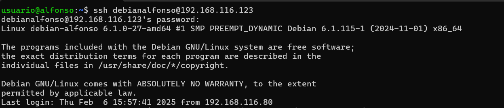
El primer paso será clonar el repositorio de git en caso de no tenerlo con: git clone https://github.com/raul-profesor/DAW_practica_6.1_2024.git.
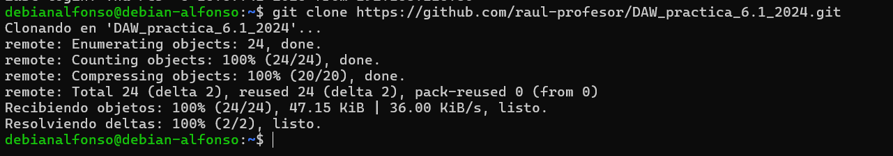
Después, entramos en la carpeta con cd DAW_practica_6.1_2024 y nano Dockerfile para modificar los siguientes campos:
_____ node:18.16.0-alpine3.17
_____ mkdir -p /opt/app
_____ /opt/app #
_____ src/package.json src/package-lock.json .
_____ npm install
_____ src/ .
_____ 3000
_____ ["npm", "run", "start:dev"]
Después, completamos el fichero que debería quedar así: 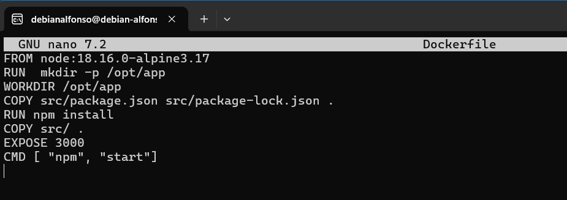
Ahora voy a explicar que es cada campo:
# Usamos la imagen de Node.js en Alpine
FROM node:18.16.0-alpine3.17
# Creamos el directorio de la aplicación
RUN mkdir -p /opt/app
# Definimos el directorio de trabajo
WORKDIR /opt/app
# Copiamos los archivos de las dependencias
COPY src/package.json src/package-lock.json ./
# Instalamos las dependencias
RUN npm install
# Copiamos el resto del código
COPY src/ .
# Usamos el puerto 3000 para acceder a la aplicación
EXPOSE 3000
# Comando por defecto para ejecutar la aplicación
CMD ["npm", "start"]
El siguiente paso es crear una build de la imagen de Docker con docker build -t librodirecciones .. Muy importante añadir el punto (.) al final para que se realice en el mismo directorio.
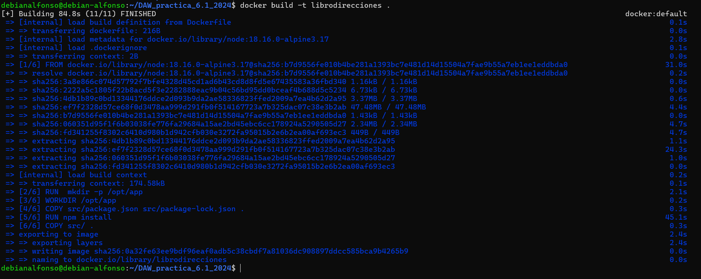
Por último iniciamos el contenedor con docker run -p 3000:3000 -d librodirecciones. Con el comando -p, indicamos que queremos que escuche todas las conexiones que ocurran desde el puerto 3000 y con la opción.
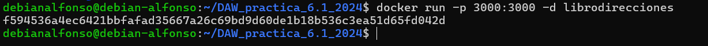
Accedemos desde nuestra máquina anfitriona a la dirección direccionIpServidor:3000 y deberiamos ver lo siguiente:
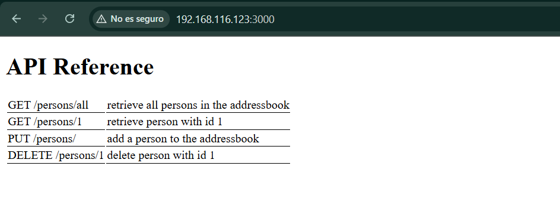
2.1.- Docker Compose
Este fichero sirve para gestionar aplicaciones en más de un contenedor, esto te permite:
- Iniciar y detener múltiples contenedores en secuencia.
- Conectar contenedores utilizando una red virtual.
- Manejar la persistencia de datos.
- Establecer variables de entorno.
- Construir o descargar imágenes de contenedores según sea necesario.
Este fichero tiene una extensión YAML, en nuestra aplicación es el siguiente:
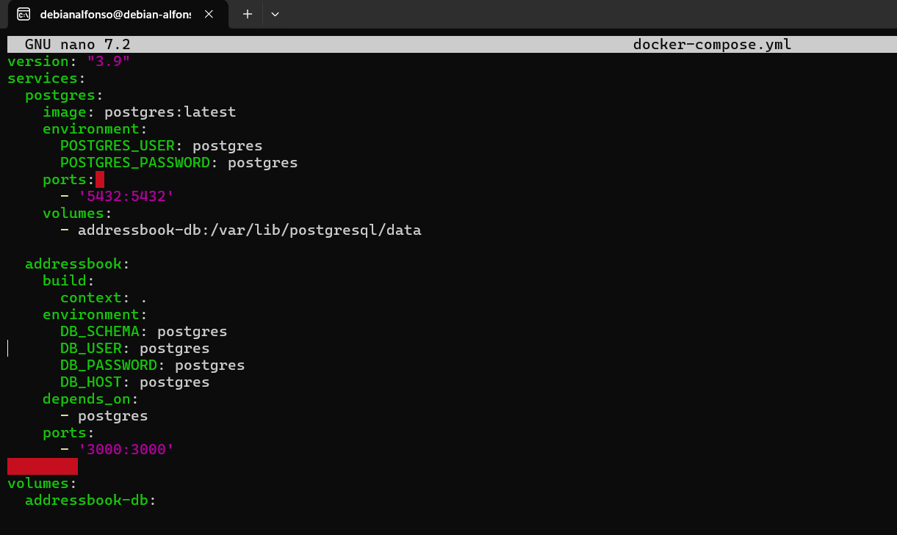
Para levantar nuestro docker-compose, simplemente lo hacemos con docker compose run addressbook npm run migrate. Con este comando se creará la base de datos con sus respectivas tablas.
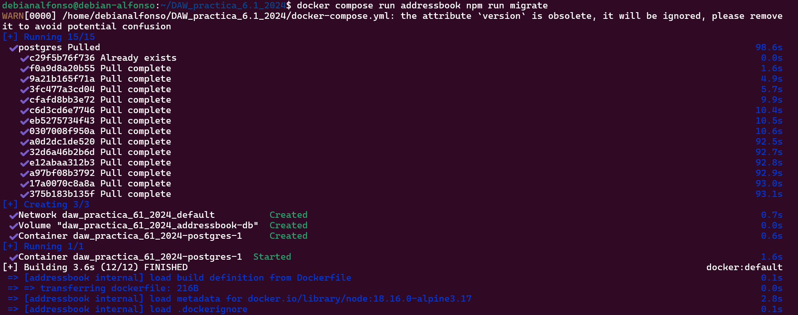
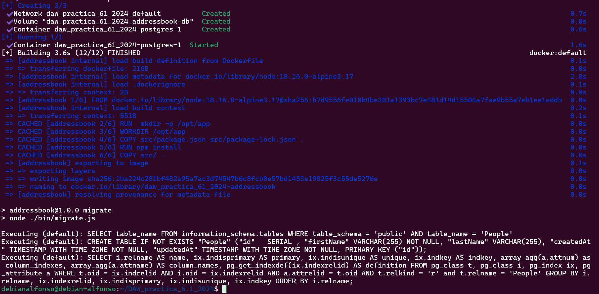
Y construimos los contenedores con docker compose up --build -d:
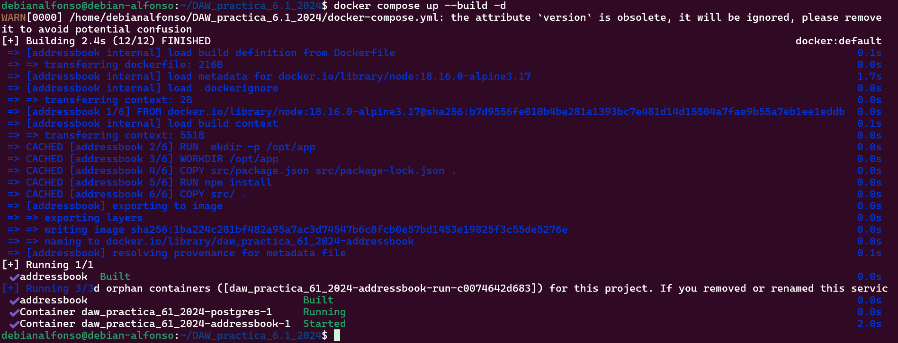
Levantamos el contenedor con docker compose up -d.
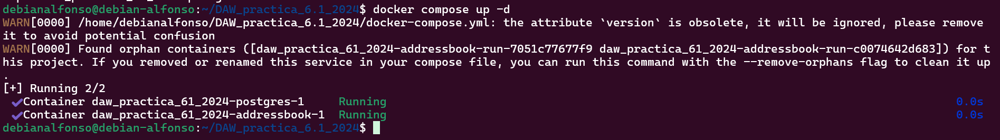
Podemos comprobar si los contenedores están levantados con docker ps;
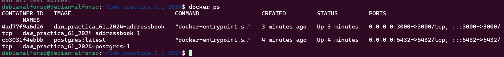
Hacemos unos test para comprobar que la aplicación funciona correctamente con docker compose run addressbook npm test. Este comando simulará ciertas peticiones de nuestra aplicación.
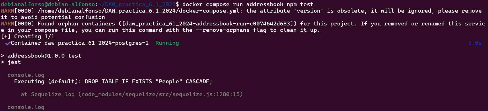
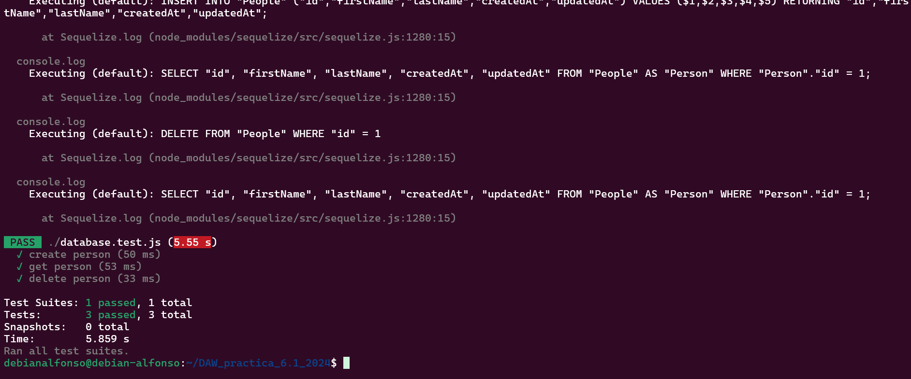
3.- Tarea
Probad que la aplicación junto con la BBDD funciona correctamente. El funcionamiento de la API es:
Para ello desde la terminal de nuestra máquina física hacemos las siguientes peticiones:
-
GET /persons/allmuestra todas las personas en el libro de direcciones. 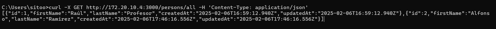 -
GET /persons/1muestra la persona con el id 1. 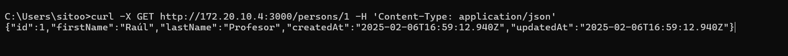 -
PUT /persons/añade una persona al libro de direcciones. 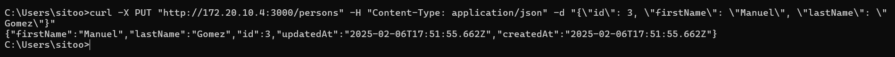 -
DELETE /persons/1elimina a la persona con el id 1. 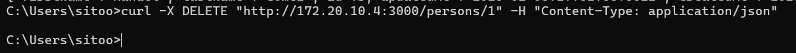